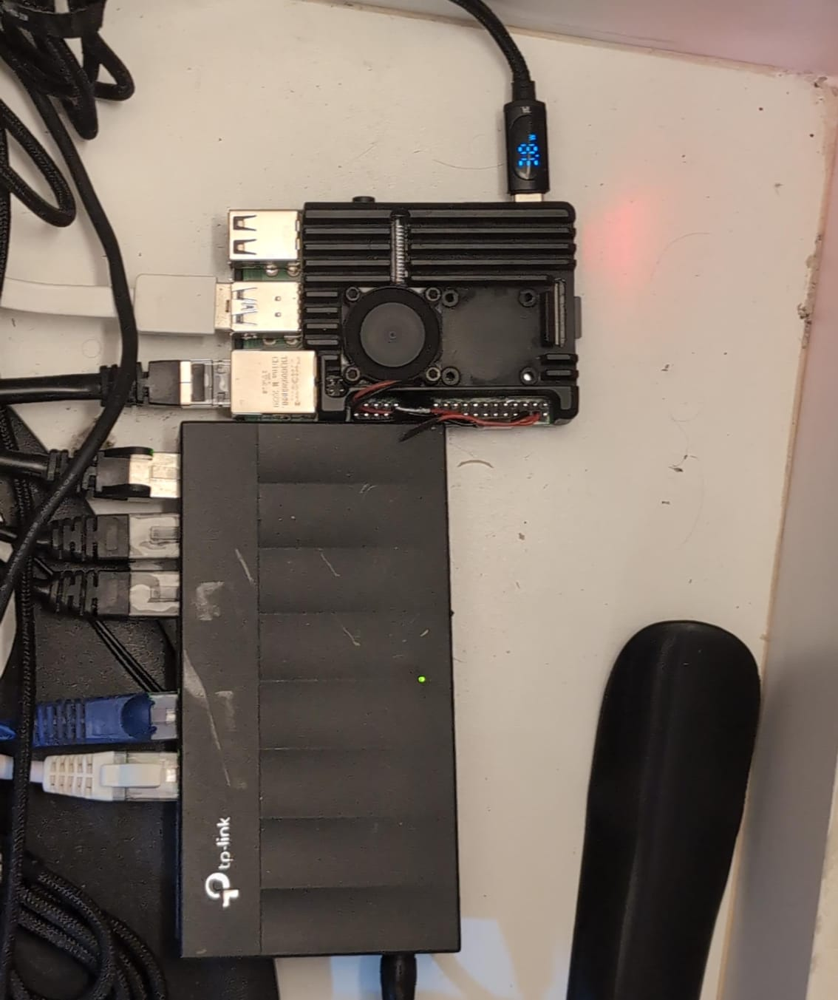

Descrição
Development of a router based on a Raspberry Pi 4 running OpenWRT, with support for CGNAT bypass via Tailscale and integration of VPNs (WireGuard and OpenVPN).
Imagens


Raspberry Pi 4 running OpenWRT with WireGuard/OpenVPN and Tailscale.
Goal: secure remote access even behind CGNAT.
Development of a router based on a Raspberry Pi 4 running OpenWRT, with support for CGNAT bypass via Tailscale and integration of VPNs (WireGuard and OpenVPN).